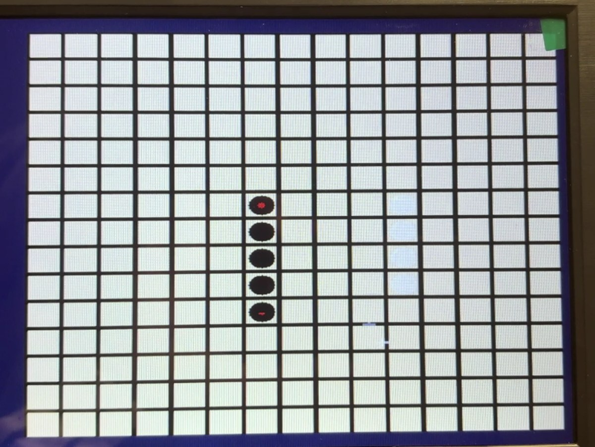
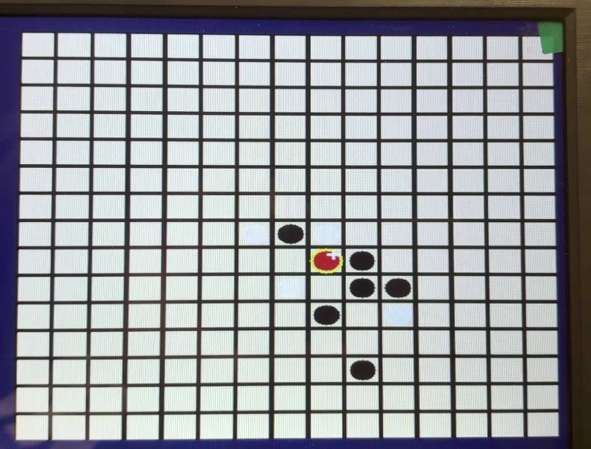

Projects / Digital hardware
FPGA Gomoku
A five-in-a-row game built entirely in hardware: VGA rendering, PS/2 mouse control, and a heuristic AI opponent on an Artix-7 FPGA.
Overview
Gomoku is simple enough to state in a sentence and awkward enough to build in hardware: there is no processor, no operating system and no framebuffer to draw into. Every pixel of the 640×480 VGA frame is decided combinationally while the beam scans, the board lives in flip-flops rather than memory, and the opponent has to make up its mind inside the same clock domain that is drawing the picture.
The system runs on a Digilent Nexys 4 DDR board. A PS/2 mouse is the only input device: left click places a stone, right click undoes the last move, middle click resets to the menu. The design supports player-versus-player and player-versus-AI, detects five in a row in all four directions, and marks the winning line in red on screen. vga_ctrl is the synthesized top module; it instantiates the mouse subsystem, the game controller and the AI controller, and renders either the mode-selection screen or the board.
This was a four-person course project for Digital System Design at SUSTech, by Zeng Dingyao, Han Yuzhou, Jin Wenyuan and Jinge Guo.
On the board


How it works
Video. The renderer follows standard 640×480 VGA timing — H_ACTIVE 640 of H_TOTAL 800, V_ACTIVE 480 of V_TOTAL 525 — driven by a divided clock. The 15×15 board is drawn as 28-pixel cells separated by 2-pixel grid lines, centred in the active frame. Menu, board, stones, cursor, hover marker and the red winning line are all decided per pixel; the start screen is read from a Block Memory ROM initialised from an RGB444 image.
Board state. Two 225-bit vectors hold the game: board_pieces records occupancy and board_colors records the stone colour, indexed by idx = y × 15 + x. Splitting them keeps both checks trivial in logic. A move stack of up to 100 entries records history, which is what makes right-click undo possible — pop the last position, clear it, flip the turn.
Control. The game controller is a two-state machine: MODE_SELECT and PLAYING. Clicking the PvP or PvE button initialises a board and enters play; from there clicks are validated against occupancy, the turn alternates, and after every move the win checker scans the four directions from the last stone.
The opponent. The AI controller is its own IDLE → THINKING → DONE machine. It walks all 225 cells, one per clock, and scores each empty one with a directional heuristic: how long a run the AI itself would make in each of the four directions, how long a run it would deny the opponent, and how close the cell is to the centre. An open three is worth more than a closed one, a four is worth more than everything else, and the same weights are applied to the opponent's shapes so that blocking falls out of the same score.
Key code
The heart of the AI is the scoring function. The centre-preference term seeds the score, then each of the four directions adds attack value; the same block runs again with the opponent's colour to add defensive value.
total := (7 - abs(r-7)) * (7 - abs(r-7)) + (7 - abs(c-7)) * (7 - abs(c-7));
for d in 0 to 3 loop
-- 己方评分
cnt := count_dir(pieces, colors, r, c, DIR_R(d), DIR_C(d), self_c);
left_open := has_open(pieces, colors, r, c, DIR_R(d), DIR_C(d), self_c, 1);
right_open := has_open(pieces, colors, r, c, DIR_R(d), DIR_C(d), self_c, 0);
if cnt = 4 then
total := total + 10000;
elsif cnt = 3 then
if left_open and right_open then
total := total + 2000;
elsif left_open or right_open then
total := total + 500;
else
total := total + 100;
end if;
elsif cnt = 2 then
if left_open and right_open then
total := total + 200;
elsif left_open or right_open then
total := total + 50;
else
total := total + 10;
end if;
elsif cnt = 1 then
if left_open or right_open then
total := total + 10;
end if;
end if;
-- 对方评分（防守）
cnt := count_dir(pieces, colors, r, c, DIR_R(d), DIR_C(d), enemy_c);All VHDL sources
- MouseCtl.vhd
- MouseDisplay.vhd
- Ps2Interface.vhd
- TopGobangSystem.vhd
- ai_controller.vhd
- clk_wiz_0.vhd
- clk_wiz_0_clk_wiz.vhd
- display_controller.vhd
- game_controller.vhd
- start_screen_controller.vhd
- vga_ctrl.vhd
Also included: pin and clock constraints for the Nexys 4 DDR, the start-screen .coe image data, Vivado utilization, timing and power reports, the generated bitstream, and the Vivado project file.
Implementation results
Synthesis, placement, routing and bitstream generation all complete for xc7a100tcsg324-1. Numbers below are read from the Vivado reports for this build, the final version with the start-screen image ROM.
| Metric | Used | Available | Utilization |
|---|---|---|---|
| Slice LUTs | 27,933 | 63,400 | 44.06% |
| Slice registers | 1,027 | 126,800 | 0.81% |
| Block RAM tiles | 103.5 | 135 | 76.67% |
| DSP slices | 37 | 240 | 15.42% |
| Bonded IOBs | 17 | 210 | 8.10% |
Timing closes with 8.367 ns worst negative slack and 0.284 ns worst hold slack, no failing endpoints. Estimated total on-chip power is 0.618 W. The logic is LUT-heavy because the renderer evaluates pixel-dependent conditions every active pixel and the AI scores cells combinationally; block RAM is almost entirely the start-screen image.
The written report analyses an earlier build of the same design, before the image ROM was added, and its resource and power tables differ from the ones above for that reason.